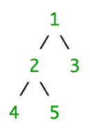
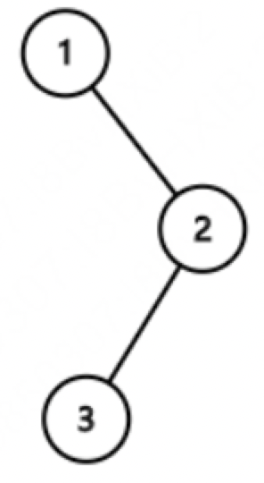

1、前序遍历口诀：根左右。前序遍历首先访问根结点然后遍历左子树，最后遍历右子树。在遍历左、右子树时，仍然先访问根节点，然后遍历左子树，最后遍历右子树。
2、中序遍历口诀：左根右。中序遍历首先遍历左子树，然后访问根结点，最后遍历右子树。
3、后序遍历口诀：左右根。后序遍历首先遍历左子树，然后遍历右子树，最后访问根结点，在遍历左、右子树时，仍然先遍历左子树，然后遍历右子树，最后遍历根结点。
例1：输入某二叉树的前序遍历和中序遍历的结果，请重建出该二叉树。(前序/后序遍历 + 中序遍历可以重建二叉树)
假设输入的前序遍历和中序遍历的结果中都不含重复的数字。前序遍历序列{1,2,4,5,3}和中序遍历序列{4,2,5,1,3}
 因为前序遍历的第一个元素就是当前二叉树的根节点。那么，这个值就可以将中序遍历分成 2 个部分。在以上面的例子，中序遍历就被分成了 4 2 5 和 3 两个部分。4 2 5就是左子树，3就是右子树。最后，根据左右子树，继续递归即可
例2：求给定二叉树的前序遍历{1,#,2,3}
输入TreeNode类型数据，返回一维数组。有递归法、栈方法两种实现方案
例3：编写一个函数来查找字符串数组中的最长公共前缀